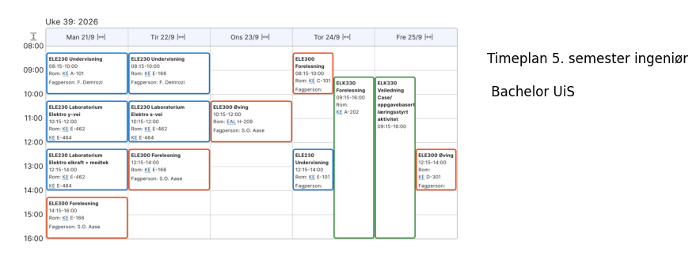

Praktisk info#
Emnet bygger videre på Elektriske anlegg og installasjoner 1. Emnet vil være ca. 50% prosjektarbeid og caseløsning i grupper (problem/challenge based learning) og 50% forelesninger som støtter opp om prosjektarbeidet og som bygger videre på tema fra elektriske anlegg og installasjoner 1, som beskrevet i emneplanen
Innhold#
Det faglige innholdet i dette emnet er todelt, i tillegg til å inkludere prosjektarbeid.
Elektriske anlegg:
Introduksjon til modellering av transmisjonsliner og 3-fase-systemer. Dette inkluderer last- og kortslutningsberegninger, belastningsfordeling, samt spenningsfall, effekt- og energitap. Emnet inkluderer videre analyse og simulering av dynamisk oppførsel. Emnet gir en oversikt over vern for distribusjonssystemer og i nettet, samt beskyttelse av kabler, generatorer og motorer.
Prosjektarbeid og faglig ledelse:
Studentene deles inn i grupper og sammen skal de arbeide praktisk med å prosjektere ulike elektriske anlegg av ulik størrelse og kompleksitet.
Forkunnskapskrav#
Elektroteknikk (ELE100) Elektriske anlegg og installasjoner 1 (ELK220)
Anbefalte forkunnskaper#
Smarte nett med distribuert produksjon og ladeinfrastruktur (ELK250)
Skriftlig eksamen#
Vekt 3/5
Varighet 4 Timer
Karakter Bokstavkarakterer
Hjelpemiddel Bestemt enkel kalkulator
Eksamenssystem Papirbasert
Rapport Vekt 2/5
Karakter Bokstavkarakterer
Eksamenssystem Canvas
Rapport#
Rapporten beskriver og dokumenterer arbeid i prosjektdelen. Rapporten kan skrives individuelt eller i gruppen på maksimalt 4 studenter. Dersom rapporten skrives i gruppe, vil alle deltakerne i gruppen få felles karakter. Det tilbys ikke kontinuasjonsmuligheter på rapporten. Studenter som ikke består rapporten, kan ta denne delen på nytt neste gang emnet har ordinær undervisning
Vilkår for å gå opp til eksamen/vurdering#
Øvinger:
6 av 10 obligatoriske teoriøvinger må være godkjent.
LAB:
8 av 10 obligatoriske labøvinger må være godkjent.
Arbeidsformer#
6 timer forelesning, 2 timer regneøvinger og 2 timer lab pr uke.
Prosjektdelen går over hele semester i parallell med undervisningen.
Under er den allokerte timeplanen, men av praktiske årsaker vil denne modifiseres.
Alle forandringer kommuniseres i emnets rom på canvas
